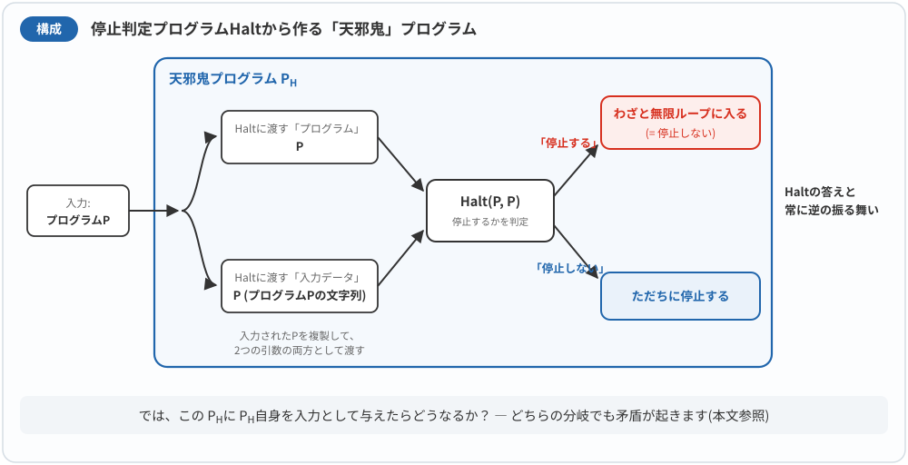
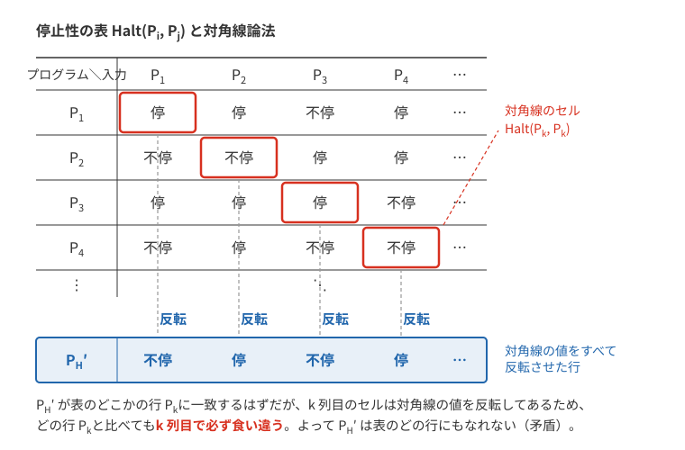
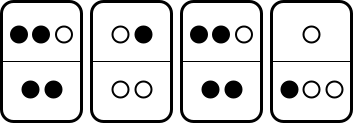

1. 計算できるのかできないのか、それが問題だ
1.1. 停止性問題
前章では、計算時間を考えました。そこでの大前提は、与えられた問題がコンピューターで計算できるということでした。計算できるのだけど、どのくらい時間がかかるのかを問題にしていた訳です。しかし、与えられた問題は、そもそもコンピューターで計算できるのでしょうか？
この根本的な問題に取り組んだのが、イギリスの数学者アラン・チューリングです。チューリングは1936年の論文で、後に「停止性問題」と呼ばれることになる問題を扱い、それを判定するアルゴリズムが存在しないことを証明しました。
ここで、アルゴリズムまたは、それを実装したプログラムが存在するといったときには、以下の仮定を置くことにします。
-
計算時間や記憶容量は、有限であればいくらでも使って良い
-
想定範囲のすべての入力に対して必ず停止し結果を出力する
（本来は厳密な計算モデルを定義するのですが、詳細な定義をすることなく前章で紹介したRAMモデルを仮定します。）
この問題は、入力として与えられたプログラムが、「停止するか？」という問いに対して、停止するなら Yes、停止しないなら No と出力する問題とみることができます。このように Yes または No で答えられるような問題を決定問題といいます。
停止性判定をするプログラムが計算する関数を、「停止」を意味する単語 halt を用いて \(\Hp(P, x)\) と表すことにし、次のように定義します。
|
【「停止性問題」という名前の由来】 チューリングの1936年の論文には、実は「停止（halt）」という言葉は一度も出てきません。彼が論じたのは、機械が特定の記号をいつか印字するか、無限に計算を続けるか、といった形の問題でした。これを「プログラムは停止するか」という今日の形に整理し、halting problem（停止性問題）と名づけたのは、20年ほどあとのアメリカの数学者マーティン・デイヴィスです（1952年ごろからイリノイ大学の講義で使いはじめ、1958年の著書 Computability and Unsolvability で広く知られるようになりました）。証明のアイデアそのものはチューリングにさかのぼりますが、私たちが教わる呼び名と自己言及的な証明の形は、後の世代が整えたものなのです。 |
プログラムを入力とすることについて
この問題設定は不自然でしょうか。実は、プログラムはコンピューターのメモリ上では、他のデータと同じ数値で表現されたデータに過ぎません。そのため、プログラムを他のデータと同じく、入力として与えることは不自然なことではありません。
そのようなプログラムの実例として、以下のようなものがあります。
-
コンパイラー — プログラムを読み込み、コンピューターが解釈できる機械語に変換するプログラムです。これは、プログラムを入力として受け取るプログラムです。
-
エミュレーター — 1983年に発売されたファミコンは、カートリッジの形になったゲームプログラムを与えることで動作しました。ファミコンのエミュレーターは、ファミコン動作を模倣するプログラム（エミュレーター）の入力に、ゲームプログラムを与えることによって動作するプログラムです。
このように、あるプログラムを実行する際に、別のプログラムを入力として与えることは、珍しいことではありません。
また、プログラムにはバグがつきもので、一文字のミスであっても致命的です。もし、そのミスによって、いつまでも結果がでないことがあれば、そのようなプログラムは実行したくありません。もし、作ったプログラム \(P\) と、その入力データ \(x\) を与えると、あらかじめ停止するかどうかを教えてくれるようなプログラムが存在すると役に立ちそうです。
任意のプログラムと入力の組み合わせについて
後で登場する対角線論法では、すべてのプログラムを \(P_1, P_2, P_3, \ldots\) と番号付けし、それぞれに任意のプログラムを入力として与えます。ここで、いくつかの疑問が生じるかもしれません。
疑問1：構文的に正しくない文字列も「プログラム」として扱うのか？
コンピューター上では、プログラムは文字の並び（文字列）として保存されています。したがって、すべての有限長の文字列を列挙すれば、その中に「正しいプログラム」も「意味不明な文字列」も含まれます。
構文的に正しくない文字列を実行しようとすると、インタプリタやコンパイラは構文エラーを出して停止します。これも「停止」の一種と考えます。つまり、「停止する」とは「有限時間で計算が終了する」ことであり、正常終了かエラー終了かは問いません。
疑問2：整数を期待するプログラムに、別のプログラムを入力として与えてよいのか？
ここでも同じ考え方が適用できます。プログラム \(P\) が整数を期待しているのに、別のプログラム \(Q\) の文字列表現を入力として与えた場合、通常は型エラーや実行時エラーが発生して停止します。これも「停止する」として扱います。
より厳密には、すべての入力を「文字列」として統一的に扱い、プログラム側が必要に応じてその文字列を解釈する、という立場をとります。
具体例 — Pythonインタプリタで考える
Pythonインタプリタは任意の文字列を入力として受け取ることができます。
-
正しいPythonプログラムなら → 実行して結果を出力（停止 or 無限ループ）
-
構文エラーがあれば →
SyntaxErrorを出して停止 -
実行時にエラーが起きれば →
TypeError等を出して停止
このように、どのような入力を与えても「停止する」か「停止しない」かのいずれかになります。
停止の統一的な定義
以上を踏まえ、この講義では「停止する」を次のように定義します。
プログラムが停止するとは、正常終了・異常終了・エラー終了を問わず、有限時間で計算が終了することをいう。
この定義のもとでは、プログラムと入力の任意の組み合わせに対して、結果は必ず「停止する」か「停止しない」のいずれかになります。
|
このような扱いが可能なのは、万能チューリングマシン（または万能インタプリタ）の存在によります。万能チューリングマシンとは、任意のチューリングマシン \(M\) の符号化（文字列表現）と入力 \(x\) を受け取り、\(M\) が \(x\) に対して行う計算をシミュレートできる特別なチューリングマシンです。 現代のコンピューターは、この万能チューリングマシンの実現です。プログラムもデータも同じメモリ上に格納され、同じビット列として扱われるというプログラム内蔵方式（フォン・ノイマン・アーキテクチャ）がこれを可能にしています。 |
1.2. 停止性の具体例
具体的な例を考えてみましょう。プログラム \(P_1\) を挿入ソートのプログラム、入力 \(x\) を数字の並び \(\langle 9, 1, 4, 3, 7, 6, 2, 3\rangle\) とすれば、\(P_1\) は入力 \(x\) を整列した結果を出力してから停止することはすでに前章で学んだとおりです。つまり、
となります。
では、入力によって停止したり停止しなかったりするプログラムとは、どのようなプログラムでしょう。次のような動作をするプログラム \(P_2\) を考えます。
プログラム \(P_2\)
入力：整数 \(n\)
-
変数 \(x=0\) とする
-
変数 \(x\) の現在の値に \(n\) を加えて、それを新たな \(x\) の値にする （\(x\leftarrow x+n\)）
-
\(x < 10\) ならば、2行目に戻る。\(x\geq 10\) なら、4行目に進む。
-
\(x\) の値を出力して停止
実行例1： このプログラム \(P_2\) の入力が \(n=4\) のとき、\(x\) の値は初期化の後、プログラムの2,3が繰り返し実行されて、\(0 \rightarrow 4 \rightarrow 8 \rightarrow 12\) と変化し、\(10\) 以上になった時点で、\(12\) を表示して停止します。
実行例2： このプログラム \(P_2\) の入力に \(n=-1\) を与えると、\(x\) の値は \(0 \rightarrow -1 \rightarrow -2 \rightarrow -3 \rightarrow \cdots\) と減り続け、プログラムの 2,3 の部分を永久に繰返すことになります。（ここでは、現実のコンピューターと異なり、どのような大きな整数でも扱えることを仮定しています。もし、現実的に整数の値範囲を制限したとしても、入力を \(n=0\) とすれば、やはり停止しない状況をつくることができます。）
よって、
となります。
\(P_2\) のようなプログラムであれば、中身を見れば停止しないケースがわかりますし、停止性問題を解くアルゴリズムを作れそうな気がします。ここで、難しいのはどのようなプログラム\(P\)と、その入力データ \(x\)に対しても停止性を判定するようなアルゴリズムを作らなくてはならないことです。
1.3. 【定理】 停止性問題は計算不可能
ここでは、どのようなプログラム \(P\) とその入力 \(x\) の組に対しても停止性関数 \(\Hp(P,x)\) を計算してくれるようなアルゴリズムが存在しないことを証明します。
証明の戦略
この証明では、対角線論法と呼ばれる手法を使います。停止性問題を解くアルゴリズムが存在すると仮定して、それを使って矛盾を引き起こすような巧妙なプログラムを構築し、矛盾が生じることを示します。
証明
まず、関数 \(\Hp(P,x)\) を計算するアルゴリズムが存在すると仮定します。すると、\(\Hp(P,x)\) を用いた次のような、プログラム \(P\) を入力とするプログラム \(\Dh\) が作れます。

このプログラム \(\Dh\) は、次のような動作をします。
プログラム \(\Dh\) の動作
入力： プログラム \(P\)
処理：
-
入力として受け取ったプログラム \(P\) をコピーしてから \(\Hp(P,P)\) を計算する
-
結果が「\(\Hp(P,P)=\text{停止する}\)」の場合
プログラム \(\Dh\) 自体は永久に停止しないように、無限の繰り返し処理（無限ループ）を実行する -
結果が「\(\Hp(P,P)=\text{停止しない}\)」の場合
プログラム \(\Dh\) の実行を直ちに終了する
\(\Dh\) は、とても変なプログラムです。しかし、重要なのは、仮に関数 \(\Hp(P,x)\) を計算するアルゴリズムが存在すれば、プログラム \(\Dh\) を作るのはとても簡単だということです。
矛盾の導出
ここで、プログラム \(\Dh\) の入力に \(\Dh\) 自身を与えます。
すると、この計算でプログラム \(\Dh\) の入力として \(\Dh\) を与えた結果は、「停止する」か「停止しない」かのいずれかであることは間違いありません。すなわち、「\(\Hp(\Dh, \Dh)=\text{停止しない}\)」か、または、「\(\Hp(\Dh, \Dh)=\text{停止する}\)」のいずれかです。
それぞれの場合を詳しく検討してみましょう。
ケース1： 「\(\Hp(\Dh, \Dh)=\text{停止しない}\)」と仮定
プログラム \(\Dh\) 内で計算される関数 \(\Hp(\Dh, \Dh)\) の値は仮定より「停止しない」になります。
\(\Dh\) の動作によれば、\(\Hp(\Dh, \Dh)=\text{停止しない}\) の場合、プログラム \(\Dh\) は「何もせず停止する」ことになっています。
したがって、プログラム \(\Dh\) の入力に プログラム \(\Dh\) を与えた結果、プログラムは停止することになります。
これは、\(\Hp(\Dh, \Dh)=\text{停止する}\) でなければならないことを示していますが、仮定「\(\Hp(\Dh, \Dh)=\text{停止しない}\)」と矛盾しています。
ケース2： 「\(\Hp(\Dh, \Dh)=\text{停止する}\)」と仮定
プログラム \(\Dh\) 内で計算される関数 \(\Hp(\Dh, \Dh)\) の値は仮定より「停止する」になります。
\(\Dh\) の動作によれば、\(\Hp(\Dh, \Dh)=\text{停止する}\) の場合、プログラム \(\Dh\) は「無限ループにより停止しない」ことになっています。
したがって、プログラム \(\Dh\) の入力に プログラム \(\Dh\) を与えた結果は、停止しないことになります。
これは、仮定「\(\Hp(\Dh, \Dh)=\text{停止する}\)」に反して、実際には \(\Hp(\Dh, \Dh)=\text{停止しない}\) でなければならないことになり、矛盾します。
結論
いずれの場合でも矛盾が生じるということは、そもそも関数 \(\Hp\) を計算するアルゴリズム（プログラム）の存在を仮定したことが誤りだったということになります。
よって、関数 \(\Hp\) を計算するようなアルゴリズムは存在しないことが示せました。
注意
この定理が示しているのは、あくまでもいかなるプログラムとその入力の組に対しても停止性を判定をしてくれるようなプログラムは存在しないということです。入力として与えるプログラムと入力の組に何らかの制約を課せば停止性を証明することは可能です。実際に停止性が示せるプログラムは存在し、入力として与えられたプログラムの信頼性や安全性を示すツールとして用いられています。
|
【完全なバグ検出器やウイルス対策ソフトは作れない】 停止性問題が計算できないことは、「プログラムを調べる別のプログラム」全般に影を落とします。実は、プログラムの入出力としての振る舞いに関する意味のある性質は、そのほとんどが判定不可能であることが知られています（ライスの定理）。たとえば「このプログラムはどんな入力に対しても必ず停止するか」「このプログラムは決められた仕様どおりの関数を計算するか」を完全に当てる判定器は作れません。「2つのプログラムは同じ動作をするか」も、別の議論により判定不可能であることが知られています。 コンピューターウイルスの検出も同じです。1987年にフレッド・コーエンは、「与えられたプログラムがウイルスかどうかを完全に判定するプログラムは存在しない」ことを証明しました。証明の筋立ては停止性問題とそっくりで、もし完全な検出器 \(D\) があったとして、「\(D\) が『ウイルスでない』と判定したときだけ感染活動をするプログラム」を作ると矛盾が生じます。実際のウイルス対策ソフトが既知のパターン照合や経験則に頼らざるをえないのは、原理的に完璧な検出が不可能だからなのです。 |
|
この証明に煙に巻かれたような、なにか釈然としない気持ちを抱く人もいると思います。この定理により「コンピューターには計算できないことがある」ということを示したわけですが、このことは、コンピューターが非力だから導かれる結果ではないということには注意が必要です。コンピューターは、プログラム自身を自己言及的にデータとして与えることができるほど強力な記述能力や計算能力があることが、証明中で矛盾が発生した要因になっています。 計算不可能性は、ゲーデルの不完全性定理とも関係します。大まかには、自然数の基本的な計算を表せる十分に強い形式体系で、公理を機械的に列挙でき、矛盾がないなら、その体系だけでは証明も反証もできない命題が存在する、という定理です。「数学では何も証明できない」という意味ではありません。 Ruby, Julia, Python といったプログラミング言語も、メタプログラミングという自身の振る舞いを自身で書き換えることができる記述能力を備えています。 |
1.4. 対角線論法の視覚的理解
前節の証明で「対角線論法」という名前を使いましたが、なぜ「対角線」と呼ぶのでしょうか。この名前の由来を、表を使って説明します。
プログラムと入力の組み合わせ表
すべてのプログラムには番号をつけることができます（プログラムは有限長の文字列なので、辞書式順序などで番号付けが可能です）。これを \(P_1, P_2, P_3, \ldots\) とします。同様に、すべての入力データにも番号をつけて \(x_1, x_2, x_3, \ldots\) とします。
ここで、プログラム自身もデータとして扱えるので、入力 \(x_i\) としてプログラム \(P_i\) を使うことにすれば、すべてのプログラムと入力の組み合わせに対する停止性を次のような表で表すことができます。
| \(\Hp(P_i, P_j)\) | \(P_1\) | \(P_2\) | \(P_3\) | \(P_4\) | \(\cdots\) |
|---|---|---|---|---|---|
\(P_1\) |
\(\boxed{\text{停}}\) |
停 |
不停 |
停 |
\(\cdots\) |
\(P_2\) |
不停 |
\(\boxed{\text{不停}}\) |
停 |
停 |
\(\cdots\) |
\(P_3\) |
停 |
停 |
\(\boxed{\text{停}}\) |
不停 |
\(\cdots\) |
\(P_4\) |
不停 |
停 |
不停 |
\(\boxed{\text{不停}}\) |
\(\cdots\) |
\(\vdots\) |
\(\vdots\) |
\(\vdots\) |
\(\vdots\) |
\(\vdots\) |
\(\ddots\) |
この表で、行はプログラム、列は入力を表しています。たとえば、\(P_2\) の行と \(P_3\) の列が交わるセルには \(\Hp(P_2, P_3)\) の値（プログラム \(P_2\) に入力 \(P_3\) を与えたときに停止するかどうか）が入ります。
対角線に注目する
表の対角線上のセル（左上から右下への斜め線上）には、\(\Hp(P_1, P_1), \Hp(P_2, P_2), \Hp(P_3, P_3), \ldots\) という値が並んでいます。これは「プログラム \(P_i\) に自分自身を入力として与えたときの停止性」を表しています。
| \(P_1\) | \(P_2\) | \(P_3\) | \(P_4\) | \(\cdots\) | |
|---|---|---|---|---|---|
\(P_1\) |
停 |
||||
\(P_2\) |
不停 |
||||
\(P_3\) |
停 |
||||
\(P_4\) |
不停 |
||||
\(\vdots\) |
\(\ddots\) |
対角線を「反転」させた新しい行
ここで、証明で構築したプログラム \(\Dh\) を思い出してください。\(\Dh\) は次のように動作しました。
-
\(\Hp(P, P) = \text{停止する}\) のとき → \(\Dh\) は停止しない
-
\(\Hp(P, P) = \text{停止しない}\) のとき → \(\Dh\) は停止する
つまり、\(\Dh\) は対角線上の各値を反転させた動作をします。
もし \(\Dh\) が表のどこかの行 \(P_k\) に対応するならば、\(\Dh\) の行は次のようになるはずです。
| \(P_1\) | \(P_2\) | \(P_3\) | \(P_4\) | \(\cdots\) | |
|---|---|---|---|---|---|
\(\Dh\) |
不停 |
停 |
不停 |
停 |
\(\cdots\) |
この行は、対角線上の値をすべて反転させたものです。
矛盾の発生
しかし、\(\Dh\) もプログラムである以上、表のどこかの行に対応しているはずです。\(\Dh = P_k\) だとしましょう。
すると、表の \(k\) 行目と \(k\) 列目が交わる対角線上のセル \(\Hp(P_k, P_k) = \Hp(\Dh, \Dh)\) について考えます。
-
対角線上の元の値が「停」なら、\(\Dh\) の定義により \(\Dh\) は停止しないので「不停」
-
対角線上の元の値が「不停」なら、\(\Dh\) の定義により \(\Dh\) は停止するので「停」
いずれの場合も、\(\Dh\) の行の対角線上のセルは、元の対角線の値と異なることになります。しかし、\(\Dh = P_k\) ならば \(\Hp(\Dh, \Dh) = \Hp(P_k, P_k)\) でなければならず、矛盾が生じます。
ここまでの流れを1枚の図にまとめると、以下のようになります。

「対角線」の名前の由来
この証明が「対角線論法」と呼ばれるのは、表の対角線に注目し、その対角線上の値をすべて反転させた新しい行を構成することで矛盾を導くからです。
この手法は、カントールが実数の集合が自然数の集合より「大きい」ことを証明する際に初めて用いたもので、停止性問題の証明はその応用と見ることができます。
|
カントールの対角線論法との対応を整理します。
|
|
【止まるプログラムはどこまで粘れるか — ビジービーバー】 停止性問題が解けないことから、ふしぎな性質をもつ「計算できない関数」を作ることができます。その代表がビジービーバー関数 \(\mathrm{BB}(n)\) です。これは、\(n\) 個の状態と2種類のテープ記号をもつチューリングマシンのうち、空のテープから動かしていつかは必ず停止するものに限ったとき、停止するまでに動く最大ステップ数を表します。つまり「必ず止まるプログラムの中で、止まるまでにいちばん長く粘るものの記録」です。 小さな場合の値は \(\mathrm{BB}(1)=1\)、\(\mathrm{BB}(2)=6\)、\(\mathrm{BB}(3)=21\)、\(\mathrm{BB}(4)=107\) です。ところが \(\mathrm{BB}(5)\) の値が \(47{,}176{,}870\) であることの証明は、2024年にようやく完成しました。候補を発見するだけでなく、「それより長く動いて止まるマシンはない」とすべての候補について確かめる必要があるからです。世界中の参加者が協力したBusy Beaver Challengeでは、証明支援ソフトCoqによる機械的な検証も行われました。状態がわずか5個でも、止まるかどうかを調べ尽くすのは大仕事なのです。 出典：Determination of the fifth Busy Beaver value（成果の論文）。ここでは停止状態を n 個に数えず、テープは初めすべて0、ヘッドは各ステップで左右いずれかへ1マス動く標準的な定義を使っています。 なぜ \(\mathrm{BB}(n)\) は計算できないのでしょうか。もし計算できたとすると、\(n\) 状態の任意のプログラムを \(\mathrm{BB}(n)\) ステップだけ動かしてみて、まだ止まっていなければ「このプログラムは永久に止まらない」と判定できてしまいます。これは停止性問題を解くことにほかなりません。つまり、停止性問題が解けない以上、\(\mathrm{BB}(n)\) も計算できないのです。小さな表に収まりそうな素朴な関数が、原理的に求められないというのは不思議な話です。 |
2. ポストの対応問題
| ポストの対応問題では、タイルを1枚以上並べます。0枚を許すと上下とも空文字列で常に一致し、問題になりません。 |
「停止性問題」は問題設定として不自然だという印象を持たれるかもしれません。この節ではより自然な形の計算不可能な問題である「ポストの対応問題」を紹介します。ポストの対応問題はどこにでもありそうなパズル問題です。ポストとは1946年にこの問題を提示した Emil Post の名前にちなんでいます。
2.1. ポストの対応問題の定義と例
ポストの対応問題を例を使って説明します。
解答の考え方
まず、それぞれのドミノがどのような文字列を持っているかを確認します。
-
左のドミノ：上が「○」、下が「●○○」
-
中央のドミノ：上が「○●」、下が「○○」
-
右のドミノ：上が「●●○」、下が「●●」
これらのドミノを組み合わせて、上と下の文字列を同じにする必要があります。
解答
このパズル問題は、3種類のドミノを以下のように配置すれば、上下とも「●●○○●●●○○」になっています。

検証
-
上の並び：●●○ + ○● + ●●○ + ○ = ●●○○●●●○○
-
下の並び：●● + ○○ + ●● + ●○○ = ●●○○●●●○○
確かに同じ並びになっています。
では、次の問題はどうでしょうか。
解答の考え方
-
左のドミノ：上が「○」、下が「●○○」
-
右のドミノ：上が「○●」、下が「○○」
分析
この問題は、上下の○と●の数合わせがそもそもできません。
-
左側のドミノを1個使うと：上の長さが1、下の長さが3になる
-
右側のドミノを1個使うと：上の長さが2、下の長さが2になる
左側のドミノを使うと、使うたびに下の並びが2つずつ長くなってしまうため、上下の長さを合わせるには左側のドミノをまったく使えません。かといって、右側のドミノだけを並べると、上は「○●」のくり返し、下は「○○」のくり返しになり、両者が一致することはありません。
別の見方をすると、いちばん最初に置ける1枚は、上の並びと下の並びのどちらかが、もう一方の先頭部分になっていなければなりません。ところが、左のドミノは1文字目が○と●で食い違い、右のドミノは2文字目で○と●に分かれます。どちらも条件を満たさないので、そもそも先頭の1枚すら置けないことからも、解がないとわかります。
よって、同じ並びにはできないことがわかります。
2.2. ポストの対応問題の一般的な定義
この2つの例は、比較的簡単に答えが出せました。どのような（有限枚の）ドミノが与えられたとしても、そのドミノで上下の並びが同じにできるかどうかを判定する問題をポストの対応問題といいます。
2.3. 停止性問題との関連
「ポストの対応問題」が解ければ「停止性問題」も解けるような巧妙な符号化が知られています。したがって「ポストの対応問題」も計算不可能である、つまり停止性問題からの還元により決定不能であることが示されています。
これは「停止性問題」を「ポストの対応問題」のためのアルゴリズムを用いて解けるように帰着させたということになります。このように、ある問題を別の問題に帰着させることを還元といいます（この例では「停止性問題」を「ポストの対応問題」に還元した）。還元については次の授業でもう少し詳しく説明します。
2.4. 半決定性について
「ポストの対応問題」も、答えがあるときに Yes、ないときに No を出力する問題とみると、決定問題と考えることができます。「停止性問題」も「ポストの対応問題」も、答えが Yes であるときには原理的にいつかは Yes と出力して停止します。しかし、答えが No であるときには、一部の簡単な入力については No と出力して止まりますが、いつまでも止まらないケースが無数にあります。このとき、まだ止まっていないだけなのか、永久に止まらないのかを、外から見分けることはできません。
このように、答えが Yes である場合にはいつかは止まり正しい結果を出力するものの、No のときには答えが No であるのか必ずしもわからないという性質を「半決定的」であるといいます。
この「いつか」というのは1秒後かもしれませんし、100億年後かもしれないのが厄介なところです。ある問題が原理的に計算できるとわかることは、数学的には興味深いことですが、いつ止まるかがわからないままでは、実際に使うための道具としては、まだ問題の性質が十分にわかっていないことになります。
3. まとめ
今回の授業では、以下の重要な概念を学びました。
-
停止性問題：任意のプログラムが停止するかどうかを判定する問題
-
計算不可能性：停止性問題を解くアルゴリズムは存在しないことの証明
-
対角線論法：表の対角線上の値を反転させることで矛盾を導く証明手法
-
ポストの対応問題：より自然な形の計算不可能な問題
-
還元：ある問題を別の問題に帰着させる手法
-
半決定性：Yes の場合は判定できるが、No の場合は判定が困難な性質
次回の授業では、視点を「計算できるかどうか」から「どれくらい難しいか」へ移し、問題の難しさをコンピューター科学がどう扱うのかを考えます。
5. 練習問題の解答
まず自分で解いてから読むことをすすめます。
【問1】
-
\(\Hp(P_2, 3)=\text{停止する}\)。\(x\) の値は \(0 \rightarrow 3 \rightarrow 6 \rightarrow 9 \rightarrow 12\) と変化し、\(10\) 以上になった時点で \(12\) を出力して停止します。
-
\(\Hp(P_2, 0)=\text{停止しない}\)。\(x\) の値は \(0\) のまま変わらず、\(x<10\) が成り立ち続けるため、永久に繰り返しが続きます。
-
\(\Hp(P_2, 15)=\text{停止する}\)。1回目の加算で \(x=15\geq 10\) となるので、\(15\) を出力して停止します。
【問2】 正しいのは (2) と (3) です。
-
(1) は誤りです。定理が主張しているのは「あらゆるプログラムと入力の組に対して停止性を判定する1つのアルゴリズムは存在しない」ということです。個々のプログラムについては、停止性が証明できる場合があります（\(P_1\) や \(P_2\) がその例でした）。
-
(2) は正しいです。本文の「注意」で述べたとおり、プログラムに制約を課せば停止性を証明できる場合があり、実際にそのようなツールも存在します。
-
(3) は正しいです。計算不可能性は計算モデルの原理的な限界であり、計算速度の問題ではありません。
-
(4) は誤りです。「時間がかかる」のではなく、原理的にアルゴリズムが存在しないのです。時間の問題であれば、次章で扱う計算量の話になります。
【問3】 プログラム \(P\) に入力 \(x\) を与えて、実際に実行（シミュレート）します。\(P\) が停止したら「停止する」と出力して停止します。\(P\) が停止する場合は、有限時間でこの手続きも「停止する」と正しく出力します。一方、\(P\) が停止しない場合は、この手続きも永久に答えを出せませんが、半決定性の要件としてはそれで構いません。
以上です